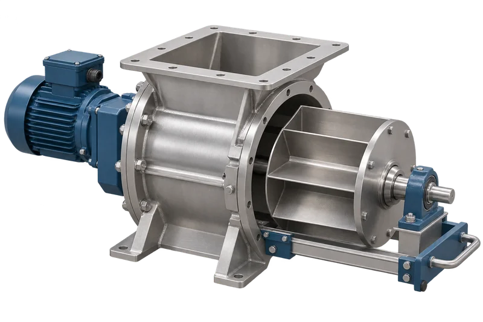
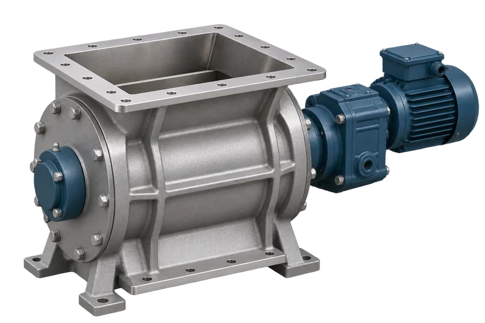

Doorvalsluis
- Kenmerk
- Product valt door de rotor naar de uitlaat.
- Past bij
- Afvoer uit een filter, cycloon of voorraadtrechter.


Voer poeders en granulaten gecontroleerd af. Vergelijk uitvoeringen voor productoverdracht, pneumatisch transport en processen waarin reiniging belangrijk is.

Bekijk per uitvoering het belangrijkste kenmerk en waar zij past. Zoek op trefwoord of filter op uw proces.



Pas uw zoekterm aan of wis de filters om alle uitvoeringen te bekijken.
Gebruik deze uitgangspunten om een keuze voor te bereiden. We beoordelen ze samen, inclusief de aansluiting op de rest van uw installatie.
Rotorkamers nemen materiaal mee van inlaat naar uitlaat. Product en drukverschil bepalen de selectie.
Bekijk de werkingDe rotor verplaatst een volume. De massa hangt onder meer af van stortgewicht en vulling van de rotorkamers. Voor een nauwkeurige massadosering kan aanvullende weging of regeling nodig zijn.
Als reiniging en inspectie regelmatig nodig zijn, kan een toegankelijke rotor onderhoud vereenvoudigen. We beoordelen daarbij producteigenschappen, afdichtingen en beschikbare serviceruimte.
De sluis wordt samen met de transportleiding en luchtbalans geselecteerd. Daarbij zijn producttoevoer, drukverschil en lekkagelucht relevante uitgangspunten.
We beoordelen de aansluitingen, capaciteit en beschikbare inbouwruimte samen met de bestaande processtappen. Deel een tekening of foto en beschrijf wat u wilt verbeteren.
Deel uw product, gewenste capaciteit en drukverschil. We stemmen de sluis af op de productstroom en de aansluitingen. Een tekening of foto van de huidige situatie helpt bij de beoordeling. Ontbrekende gegevens bespreken we tijdens de analyse.
Afmetingen, materiaalkeuze, aandrijving en benodigde toebehoren bepalen de uitvoering. Ook montage, besturing en aansluiting op de bestaande installatie tellen mee. Een offerte volgt op de vastgelegde uitgangspunten en leveringsomvang.
Deel uw product, gewenste capaciteit en drukverschil. We stemmen de sluis af op de productstroom en de aansluitingen.